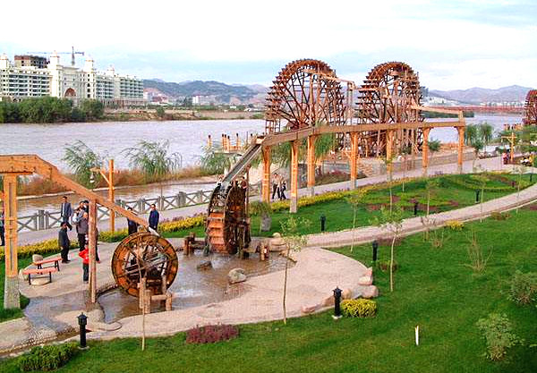
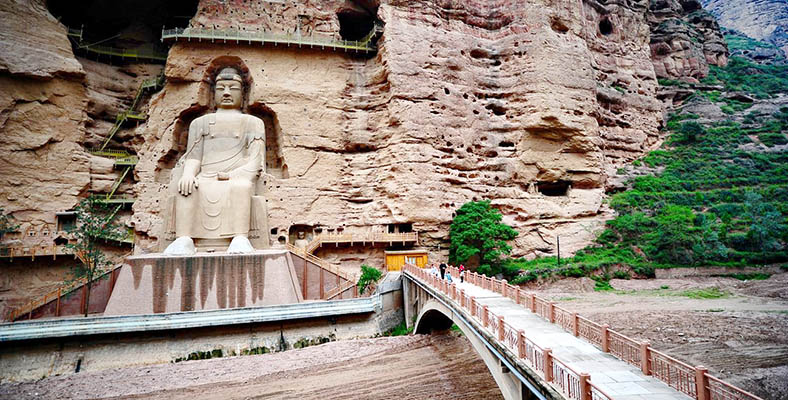
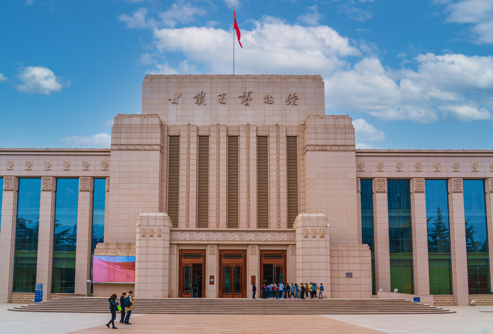

The Lanzhou Waterwheel Garden is a 14,500-square-meter park dedicated to preserving Lanzhou’s ancient waterwheel culture. Waterwheels were once vital to Lanzhou’s agriculture—these giant wooden wheels (up to 10 meters in diameter) used the Yellow River’s current to lift water into irrigation canals. The garden has 12 reconstructed waterwheels (including the “Giant Waterwheel,” the largest in China), as well as a museum explaining the history and mechanics of waterwheels. You can watch the waterwheels turn slowly by the river, touch the wooden spokes, and even try a small-scale waterwheel demonstration. It’s a unique historic site that shows how ancient Lanzhou adapted to life along the Yellow River.
Afternoon (2:00 PM–4:00 PM): Sunlight makes the waterwheels’ wooden texture stand out; fewer crowds.
Spring (April–May): River water levels are ideal for waterwheel operation.
Entry Fee: 10 CNY/adult; 5 CNY/students; free for kids under 1.2m.
Waterwheel Museum: Included in the entry fee.
Guide Service: 30 CNY/group (explains the history of waterwheels in Lanzhou).

Bingling Temple Grottoes, 100 kilometers southwest of Lanzhou, are a UNESCO World Heritage Site and one of China’s most important Buddhist grotto complexes. Carved into the cliffs along the Yellow River, the grottoes date back to the Western Jin Dynasty (266–316 AD) and include 183 caves, 694 stone statues, and 82 murals. The most famous statue is the 32-meter-tall Maitreya Buddha (carved in the Tang Dynasty), which stands majestically in a large cave. To reach the grottoes, you’ll take a 2-hour cruise along the Yellow River— the journey itself offers stunning views of river gorges and cliffside villages. The grottoes are a hidden gem, less crowded than other Buddhist sites like Dunhuang, and offer a peaceful look at ancient Buddhist art.
Spring (April–June): River water is calm for cruising; mild temperatures (15°C–25°C).
Morning (10:00 AM–12:00 PM): Natural light illuminates the murals and statues.
Entry Fee (Grottoes): 70 CNY/adult; 35 CNY/students; free for kids under 1.2m.
Cruise (Lanzhou to Grottoes, Round-trip): 150 CNY/adult; 75 CNY/children (1.2m–1.4m).
Guided Tour (Grottoes): 50 CNY/group (required for some cave areas; explains the art and history).

The Gansu Provincial Museum, in downtown Lanzhou, is one of China’s top museums—home to over 350,000 cultural relics, many from the Silk Road and ancient Gansu. The star exhibit is the “Flying Horse of Gansu” (a bronze statue from the Eastern Han Dynasty, depicting a horse stepping on a flying swallow—now a symbol of China’s tourism). Other highlights include the Silk Road Exhibition (with ancient silk, pottery, and coins), the Buddhist Art Gallery (with murals and statues from Bingling Temple and Dunhuang), and the Yellow River Civilization Exhibition (explaining Lanzhou’s role in China’s early history). The museum’s modern building has interactive displays and English labels, making it easy for international visitors to learn. It’s a must-visit for anyone interested in Chinese history and archaeology.
Morning (10:00 AM–12:00 PM): Quiet; avoid school groups that arrive in the afternoon.
Weekdays: Less crowded than weekends.
Entry Fee: Free (requires online reservation 1 day in advance; ID is needed for entry).
Special Exhibitions: 20–50 CNY/adult (varies by exhibition).
Audio Guide: 30 CNY/rental (available in English, Chinese, and other languages).